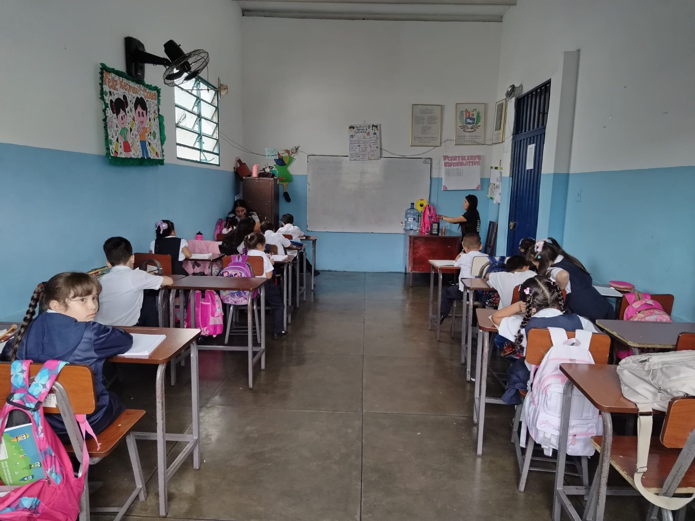

La institución
Una escuela pública al servicio de las familias de Capacho Nuevo.
Nuestra reseña
La Unidad Educativa Estadal «Presbítero Fernando María Contreras» es una institución pública de dependencia estadal que imparte formación en los niveles de Educación Inicial y Educación Primaria. Fue fundada para responder a la creciente demanda escolar de Capacho Nuevo.
Su nombre rinde homenaje al destacado clérigo e intelectual de la región tachirense. Con los años, la escuela se ha consolidado como un pilar educativo para las familias del municipio, garantizando la escolaridad básica, obligatoria y gratuita.
Al culminar la primaria, nuestros estudiantes continúan su formación en la educación media del sistema educativo nacional.

Misión
Brindar una educación inclusiva, de calidad y orientada al desarrollo de las competencias básicas de niños y niñas, en estrecha unión con la familia y la comunidad.
Visión
Consolidarse como una escuela de referencia en la región, incorporando de manera progresiva herramientas tecnológicas de apoyo a la gestión escolar y a la comunicación con los representantes.
Niveles que atendemos
Educación Inicial
Primeros pasos escolares: 1.er, 2.º y 3.er nivel, con énfasis en el juego, la convivencia y la preparación para la lectura y la escritura.
Educación Primaria
De 1.er a 6.º grado, con formación en lenguaje, matemática, ciencias, identidad y valores ciudadanos.
Nuestra comunidad escolar
Datos de referencia del diagnóstico realizado en el plantel (2026).
Dónde encontrarnos
- Dirección:
- Parroquia: Juan Germán Roscio
- Teléfono:
- Horario de atención:

Nuestro escudo
La antorcha encendida simboliza el saber que ilumina el camino de cada estudiante.